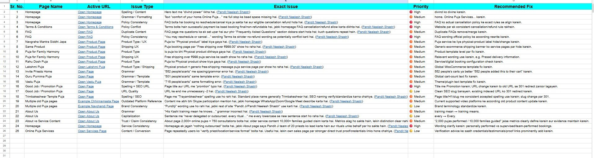
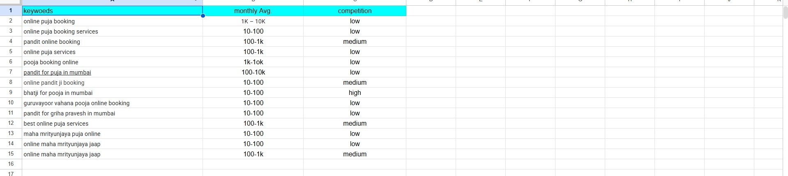
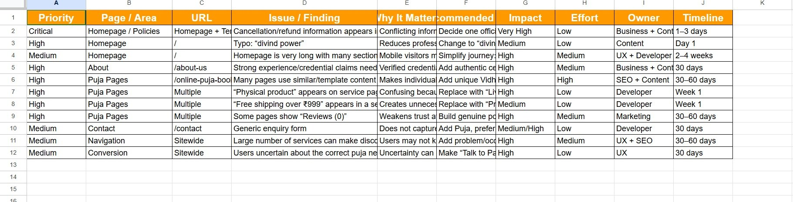
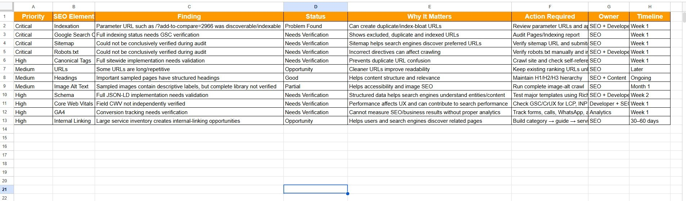
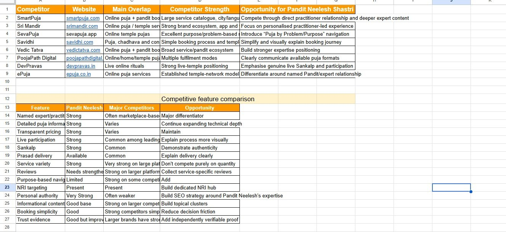
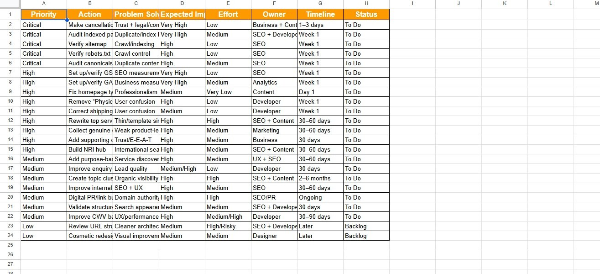

Clarity & consistency
Reviewed wording, repeated content, spelling, service descriptions and consistency across important pages.
DIGITAL MARKETING / SEO PRACTICAL WORK
A structured learning project documenting website observations, keyword planning, technical checks, competitor research and recommended next steps.
This case study records observations and proposed recommendations from a training exercise. It does not claim paid employment, implementation of suggested fixes, independently verified competitor facts, or measurable ranking and traffic results.
01 / PROJECT OVERVIEW
I reviewed the Pandit Neelesh Shastri practice website as part of my digital marketing and SEO training. The work brought together page-level investigation, keyword organization, a prioritized website audit, technical verification tasks, competitor observations and a proposed SEO action plan.
The goal was to learn how to document evidence clearly and separate what was directly observed from what was recommended or still required further verification.
02 / WEBSITE INVESTIGATION
The investigation worksheet records 25 page and site observations covering content clarity, spelling and consistency, policy information, navigation, calls to action, template or e-commerce language, branding claims and usability.
Reviewed wording, repeated content, spelling, service descriptions and consistency across important pages.
Flagged statements, policy details and trust-related content that should be confirmed before changes or publication.
Recorded potential friction around page structure, navigation, calls to action and enquiry pathways.
Paired each observation with a priority and recommended next step for review—not a claim of implementation.
03 / KEYWORD RESEARCH
The worksheet organizes 14 service- and intent-related keywords alongside recorded monthly-search ranges and competition labels. I used the list to practice grouping relevant queries and considering how page content could match user intent.
The screenshot does not show the source tool, date or location settings. The figures are treated as recorded planning data, not independently verified live metrics. Competition is not presented as organic SEO difficulty; if sourced from Google Keyword Planner, it would describe Google Ads competition.
04 / WEBSITE AUDIT
The audit worksheet converts the investigation into prioritized areas for review, including policy consistency, spelling, homepage length, claim verification, template content, reviews, contact-form usability, navigation and conversion pathways.
05 / TECHNICAL SEO AUDIT
The checklist covers indexation, Google Search Console, XML sitemap, robots.txt, canonical tags, URL structure, headings, image alt text, schema, Core Web Vitals, GA4 and internal linking.
A directly recorded concern suitable for closer review and confirmation.
Search Console, sitemap, robots, canonicals, structured data, analytics and performance require suitable tools or account access.
Items such as URLs or internal linking were recorded as areas to strengthen, not proof of a result.
Positive or partly complete observations are limited to the sampled review, not a full technical certification.
06 / COMPETITOR RESEARCH
The worksheet records eight websites and notes visible positioning, content or feature differences. This learning exercise helped me understand market presentation and identify ideas for further review.
These are student observations from a point-in-time review. They are not independently verified statements about competitors and do not claim access to private traffic, revenue, ranking or campaign data.
07 / SEO ACTION PLAN
The action-plan worksheet translates the audit into 23 proposed tasks with priority, status and planning fields across content, on-page SEO, technical verification, user experience, trust signals and measurement setup.
“To Do,” “Backlog,” expected-impact and timeline labels are planning aids—not evidence that work was completed or results were achieved.
08 / PROJECT EVIDENCE
These crops retain the training data while removing account avatars and unnecessary browser or interface details. The originals remain unchanged and are not loaded by this page. Select a preview to open its readable full-size safe copy.

25 observations covering content, consistency, trust, usability and conversion considerations.
Open full-size safe copy ↗
14 recorded keyword entries used for search-intent and content-planning practice.
Open full-size safe copy ↗
Prioritized findings with recommended next steps for review and implementation planning.
Open full-size safe copy ↗
12 documented checks using clear issue, opportunity, partial and verification states.
Open full-size safe copy ↗
Eight competitor entries and student comparison observations for planning purposes.
Open full-size safe copy ↗
23 proposed actions organized as future work; none are represented as implemented results.
Open full-size safe copy ↗09 / SKILLS & TOOLS USED
Reviewed sampled pages for content, consistency, usability, trust and conversion considerations.
Organized observations, keywords, technical checks, competitor notes and proposed actions.
Recorded search terms and planning metrics while keeping their limitations clear.
Marked what was observed and what required specialized tools or account access.
Compared visible website features and positioning as a student research exercise.
Converted findings into a reviewable plan without presenting proposals as completed work.
10 / KEY LEARNINGS